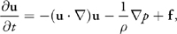
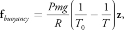
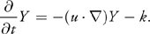

Our fire fluid system was based off of the Navier Stokes fluid simulation. We based our implementation off of the Nvidia GPU Gems fluid simulation overview, as well as a simple 2D Navier Stokes implementation we found on shadertoy. The simple Navier Stokes variant that we used implemented velocity advection, divergence, and pressure shaders in 2D. We extended this implementation to work in THREE.js in 3D with additional shaders for temperature and reactivity advection.
The base implementation for Navier Stokes does three shader passes, the output of each pass becoming the input of the next pass, with inputs and outputs being stored as textures. The first pass implements velocity, which steps in the negative direction of the velocity at each (x, y) position to get the new velocity at each (x, y). This procedure is called advection. We then pass these new velocities as a texture to a divergence shader, which estimates the divergence at each (x, y) point by calculating the velocity at the 4 points above (v_y1), below (v_y0), left (v_x1), and right (v_x0) of the current (x, y), and computing div_xy = ((v_x1 - v_x0) + (v_y1 - v_y0)) / 2. We then pass this divergence output and the velocity output into a pressure shader, where we compute the Jacobi pressure at each (x, y). This calculation gets the sum of pressures at the surrounding blocks above, below, left, and right of each (x, y), and subtracts out the divergence at (x, y) and divides by 4. We then display the output velocity at each texture. To implement this in THREE.js, we had to use the special GPUComputationRenderer, which allows us to set the render targets and dependencies of each shader pass. We then use a ping-pong buffer to display the output velocity to alternating materials in the same location. This integration was acutally quite tricky, because support for the GPUComputationRenderer is quite poor, and setting the render targets to work with the ping pong buffers for each shader is quite tricky.
|

|

|
|

|
We next converted this implementation to 3D, where we indexed into a 2D texture as if it were 3D, similar to the way one might index into a 1D framebuffer as if it were 2D. We then used ray marching to accumulate the velocities along a particular ray, and output the resulting accumulated values. It took a bit of fine-tuning to ensure that the fluid simulation displayed with the right amount of color, as it was easy to get a blown-out white blob or just a black square. We added our 3D texture onto a cube that we could place anywhere in the scene.
We then implemented shaders to make the fluid simulation a real fire simulation. This included first changing the colors from gray to orange, and then adding a temperature advection shader and a reactivity advection shader, The temperature advection makes the fluid sink in the colder air at the top of the cell, and rise near the warm source of the fluid. It uses the same advection as the velocity, but accesses into the temperature texture, rather than the velocity texture to update the new temperature values. We repeat this process for reactivity advection, which just makes the fire decrease in energy as a function of time. This just gets the advected reactivity value, and subtracts a uniform constant from it. We also added a slight smoke effect to the fire. When reactivity reaches 0, we briefly turn the colorful fire into a gray smoke. We also scale the alpha value of the smoke with the z height of the smoke.
We faced numerous challenges implementing the fluid simulation.